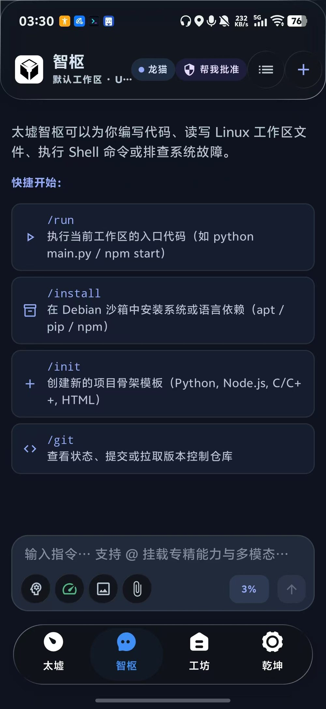

可运行
真实进程、真实文件、真实构建。答案不止停留在对话里，而是抵达工作区与产物。
ANDROID · LINUX · AI AGENT
无需 Root，在 Android 上运行真实 Linux。让 Agent 读写代码、调用工具、验证结果——从一句意图，抵达可以交付的产物。
当前目标
“把这个项目跑起来，
修好构建错误。”

01 / WHY TAIXU
太墟取意「归墟」：在 Android 的应用沙盒与权限边界之内，构筑一方可运行、可观测、可恢复的 Linux 与 AI 自动化环境。
真实进程、真实文件、真实构建。答案不止停留在对话里，而是抵达工作区与产物。
计划、工具调用、行级 Diff 与运行历史留下轨迹，随时看见系统正在做什么。
会话与任务状态持久化，检查点与对话回退让中断不必从零开始。
02 / EXECUTION LAB
模型、工具与工作区共用同一片执行空间。选择一个任务，播放太墟如何从理解目标走到交付结果。
你的意图
把这个项目跑起来，修好构建错误，再告诉我改了什么。
交互演示 · 不会执行真实命令或修改文件
点击播放，查看完整执行轨迹与交付结果。
LINUX RUNTIME
PRoot 运行 ARM64 Linux 用户空间，RootFS 从 OCI 镜像安装并校验，支持多发行版共存、切换与回滚。
AGENT HARNESS
统一流式正文、推理、函数调用、视觉输入与上下文压缩；支持任务计划、子智能体与语义记忆。
WORKSPACE & PTY
原生 PTY 支持多会话与作业控制；工作区可新建、导入 ZIP、克隆仓库、浏览源码、后台构建并交付 APK。
BOT TEAM
主控统筹目标，@ 提及完成路由；成员持有独立任务与会话，并行派单、群聊接力、产物回传。
WORKFLOW & WEB
持久化 DAG 连接命令、Agent、构建与人工审批；Browser MCP 与局域网 WebChat 把网页和大屏接入执行链。
PLUGIN PLATFORM
.txplugin v2 承载 PROCESS 命令服务与受限 WEB 页面，提供版本、依赖、SHA-256 校验与逐项能力授权。
中断可恢复 · 运行有历史 · JSON 可移植
04 / INSIDE TAIXU
智枢处理对话与任务，工坊承载项目与构建，乾坤管理模型与运行环境。切换标签，查看 Android 实机界面。
01 / 智枢
对话、计划、工具调用与审批集中在同一个任务现场。你可以看见 Agent 正在做什么，并在关键操作前介入。
05 / CONTROL & SAFETY
太墟把 Agent 视为会长期运行、真实修改工作区的执行系统，而不只是一次性的问答接口。
write_file
app/src/main/java/…/Runtime.kt
该操作将写入 214 行内容。审批仅对本次调用生效。
PLAN 模式只读；MCP 注解参与风险判断，按需发现与脚本编排中的调用同样受检查。
意图、工具结果与操作状态持久化；恢复时继续检查权限，而不是跳过审批。
每轮前创建文件检查点；rewind 检测会话外修改并报告冲突。
自动与手动压缩、token 预算、大工具输出落盘，避免上下文被一次性撑爆。
模型密钥、Git Token 与 OAuth Token 进入应用侧安全存储，不写入工作区，也不进入模型上下文。
开始之前，也需要知道这些限制
06 / GET STARTED
准备一台 ARM64、Android 10 以上的设备，预留足够存储与网络。RootFS 不内置，首次初始化会下载镜像。
从 Releases 下载最新版本，建议核对页面提供的 SHA-256。
跟随启程向导选择发行版，默认推荐 Ubuntu 24.04 LTS。
添加云端服务或 OpenAI-compatible 本地端点。
新建、导入或克隆项目，然后描述你的第一个目标。
TAIXU / V1.10.0
不需要。Linux 环境基于 PRoot 在用户态运行，不依赖 Root 权限；宿主自动化能力则取决于你是否授予无线 ADB、Shizuku 或无障碍等权限。
当前仅支持 arm64-v8a 架构、Android 10（API 29）及以上，推荐 Android 12+。复杂 TUI 与重型编译会受到设备性能、内存与 PRoot 兼容性影响。
镜像体积大且更新频繁，因此从 OCI Registry 按需下载并校验。这样支持多发行版共存，也让 APK 保持相对轻量。
可以。任何提供 OpenAI-compatible Chat Completions 或 Responses 端点的服务都可以接入；沙箱内或局域网中的 llama.cpp、Ollama 类型服务同样适用。
它不是电脑的替代品，而是把验证、调试与轻量构建带到移动场景。重型编译与长任务仍更适合电脑或远程 Linux，太墟也可以通过 SSH 连接过去。
本地 ZIP 涵盖会话、记忆、计划、技能资源与可移植偏好；不包含 RootFS、工作区实际文件、API Key、自定义请求头与会话附件。模型档案可单独导出，选择包含凭据时会以明文写入，需要自行保管。